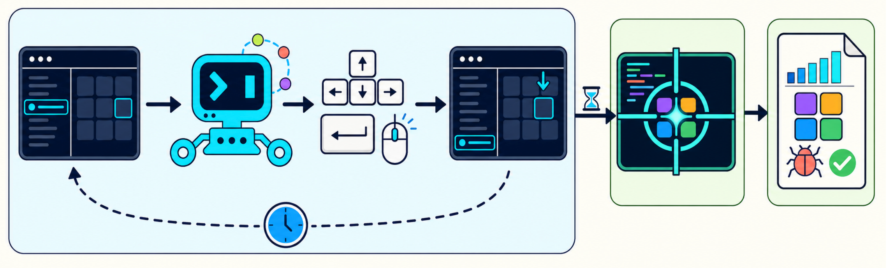
At Xu Song's concert · Aug 23, 2026
About Me
I am currently a Ph.D. student (Direct MS-to-PhD program) at the School of Computer Science and Technology, Harbin Institute of Technology, Shenzhen (HITSZ), advised by Professor Cuiyun Gao. I am expected to graduate in 2029.
My research focuses on Software Engineering, LLM Agents, and AI Coding. I am excited to explore AI Coding at every level—from models and agents to benchmarks, tools, and developer workflows—and warmly welcome research collaborations.
Concurrently, I am participating in the Rhino-Bird Elite Talent Program at WeChat Pay, Tencent WXG, working on agent-related tasks.
My MBTI type is ENFP.🐕
Stay passionate about life, always. ✨
Education Background
Ph.D. (Direct Track)
Harbin Institute of Technology, Shenzhen
2026.09 - 2029.06 (Expected)
Computer Science and Technology
Master
Harbin Institute of Technology, Shenzhen
2024.09 - 2026.08
Electronic Information
Bachelor
Harbin Institute of Technology, Shenzhen
2020.09 - 2024.06
Computer Science and Technology
Senior High School
The First High School of Changsha, Hunan
2017.09 - 2020.07
Middle School
Qingzhuhu Xiangyi Foreign Language School
Changsha, Hunan
Publications
First-Author Papers
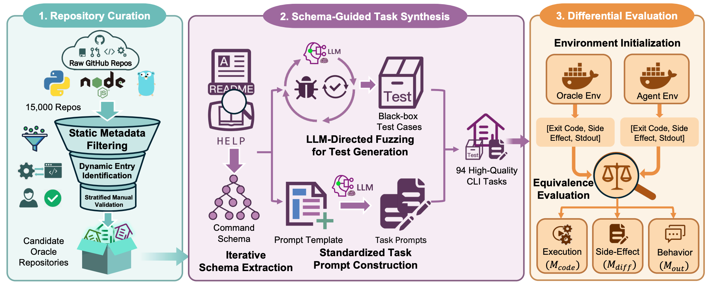
Preprint
Evaluating LLM-Based 0-to-1 Software Generation in End-to-End CLI Tool Scenarios
arXiv preprint, 2026
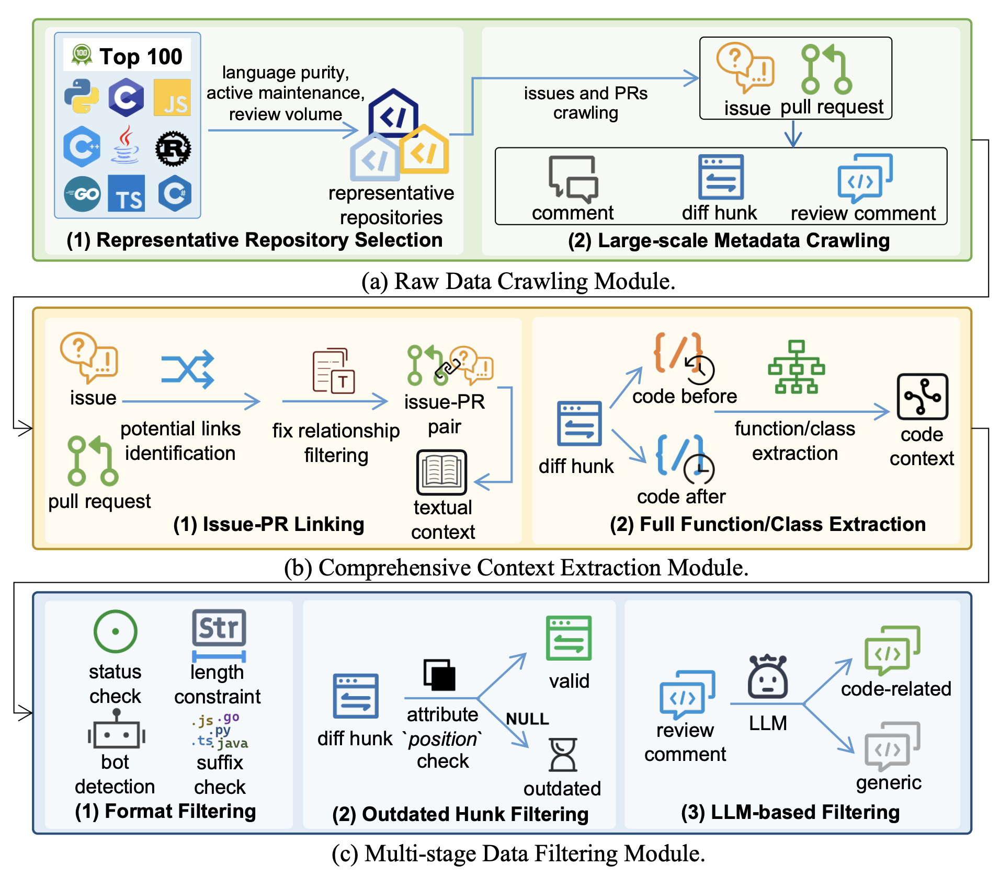
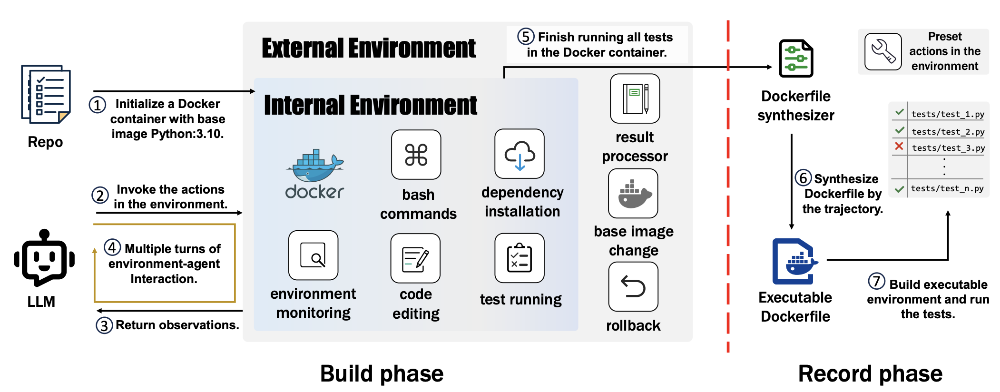
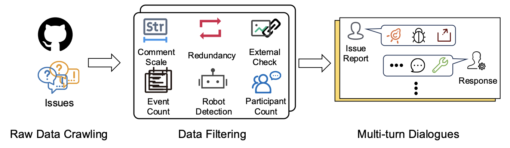
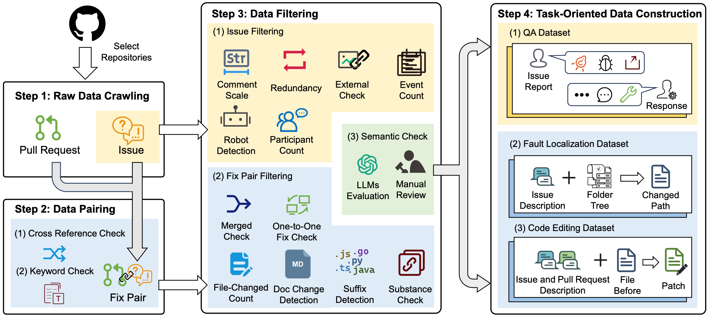
Preprint
A Real-World Benchmark for Evaluating Fine-Grained Issue Solving Capabilities of Large Language Models
arXiv preprint, 2024
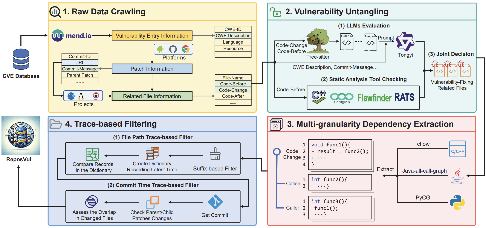
Collaborative Papers
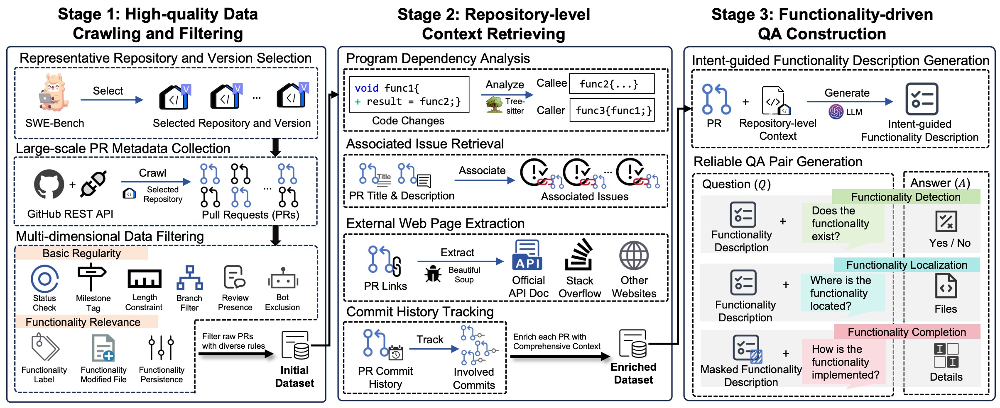
Preprint
Evaluating Repository-level Software Documentation via Question Answering and Feature-Driven Development
arXiv preprint, 2026
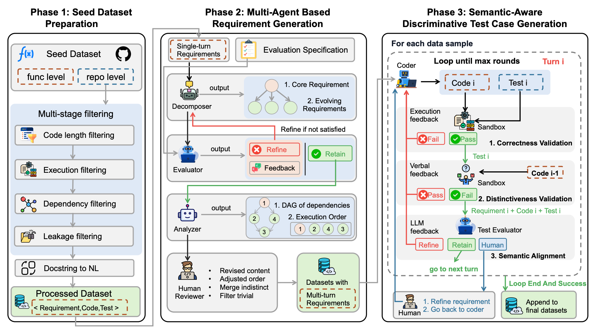
Preprint
SR-Eval: Evaluating LLMs on Code Generation under Stepwise Requirement Refinement
arXiv preprint, 2026
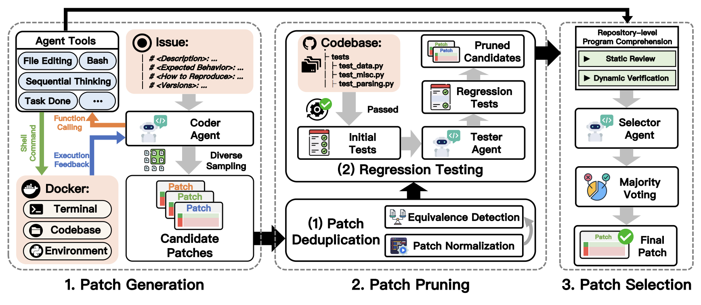
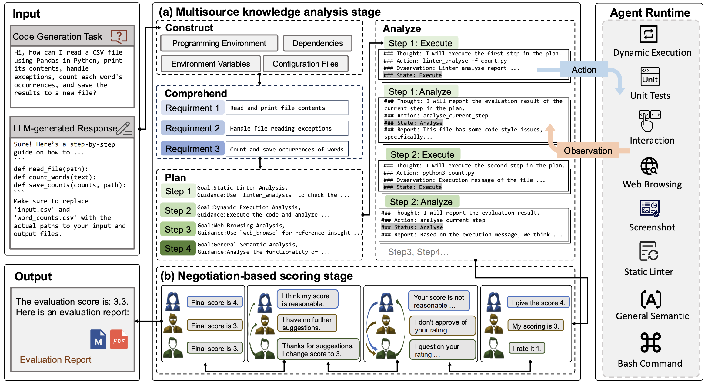
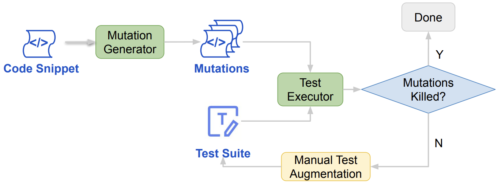
CCF-A
Repomastereval: Evaluating code completion via real-world repositories
40th IEEE/ACM International Conference on Automated Software Engineering (ASE 2025 Industry Showcase)
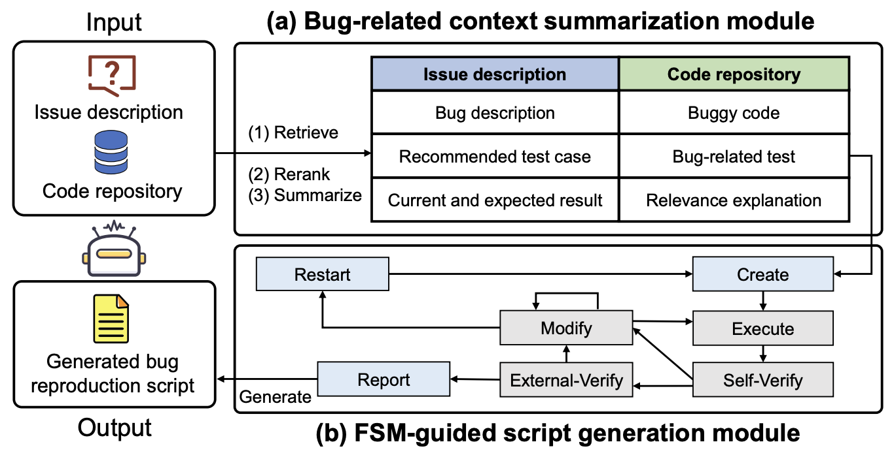
CCF-A
AEGIS: An agent-based framework for general bug reproduction from issue descriptions
33rd ACM International Conference on the Foundations of Software Engineering (FSE 2025 Industry Track)
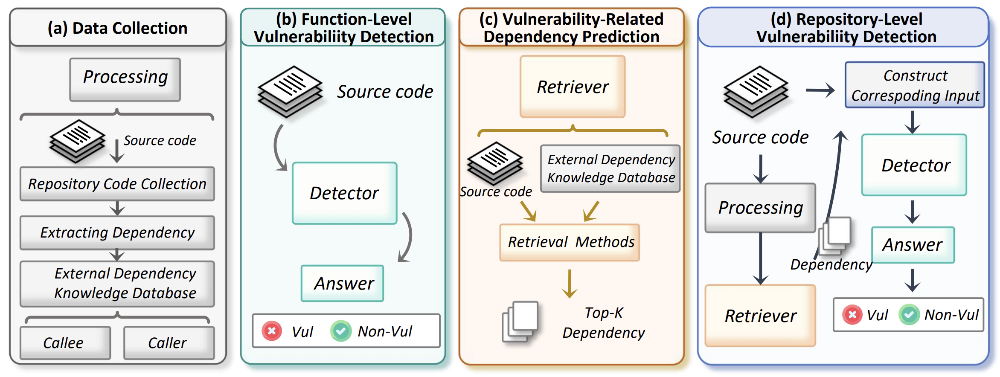
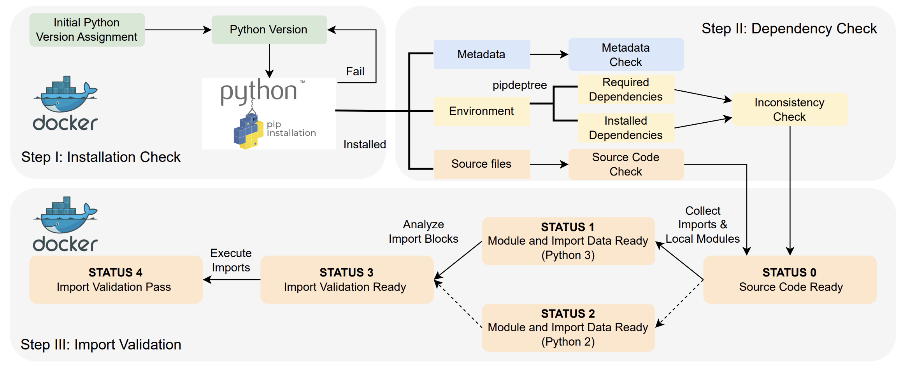
Activities
Rhino-Bird Elite Talent Program at WeChat Pay (Tencent WXG)
May 2026 - Present
I work on agent-related tasks at WeChat Pay with Long Wang and Zhitao Wang.
Intern at Trae AI group in ByteDance Ltd.
June 2024 - May 2026
I worked on AI for SE and benchmark for code tasks, and worked with Chao Peng and Pengfei Gao.
Experiences
CCF ChinaSoft 2025
Wuhan, China
November 2025
FSE/ISSTA 2025
Trondheim, Norway
June 2025
Internetware 2024
Macau, China
July 2024
ICSE 2024
Lisbon, Portugal
April 2024
Academic Services
Journal Reviewer
Conference Reviewer
Honors & Awards
Third Prize · CCF ChinaSoft Prototype Software System Challenge
CCF ChinaSoft Prototype Software System Challenge, 2025
National Scholarship (Ranked 1st in the Program)
Ministry of Education of China, 2025
Provincial Outstanding Student
Education Department of Heilongjiang Province, 2025
Top Ten Talents of HITSZ
Harbin Institute of Technology, Shenzhen, 2025
Best Paper Award
ICSE 2024 Industry Challenge Track, 2024
Outstanding Graduate
Harbin Institute of Technology, 2024
Outstanding Student Model
Harbin Institute of Technology, 2024
Huawei Intelligent Base Scholarship
Huawei, 2024
HITSZ Master's Special Academic Scholarship × 2 (Highest Tier)
Harbin Institute of Technology, Shenzhen, 2025-2026
Master's Academic First-class Scholarship of HITSZ * 1
Harbin Institute of Technology, Shenzhen, 2024
HITSZ Bachelor's First-Class Academic Scholarship × 2 (Highest Tier)
Harbin Institute of Technology, Shenzhen, 2023-2024
Bachelor's Academic Third-class Scholarship of HITSZ * 1
Harbin Institute of Technology, Shenzhen, 2022
Meritorious · MCM / ICM
Mathematical Contest in Modeling / Interdisciplinary Contest in Modeling (MCM / ICM), 2023
First Prize · China Undergraduate Mathematical Contest in Modeling
China Undergraduate Mathematical Contest in Modeling (Guangdong Province), 2023
First Prize · Chinese Mathematics Competitions
The Chinese Mathematics Competitions (CMC) Preliminary Round, 2023
Third Prize · National Student Computer System Capability Challenge
National Student Computer System Capability Challenge Final Round, 2023
Get In Touch
200111107@stu.hit.edu.cn OR buotte@qq.com